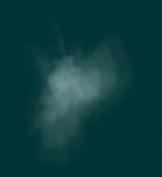
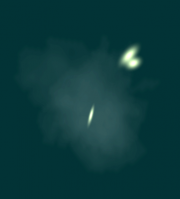
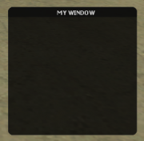
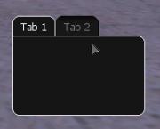
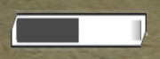
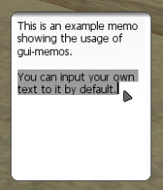
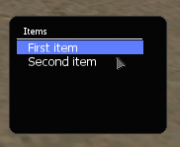

File list
From Multi Theft Auto: Wiki
This special page shows all uploaded files.
| Date | Name | Thumbnail | Size | Description | Versions |
|---|---|---|---|---|---|
| 18:08, 22 January 2010 | Fxwood.png (file) | 10 KB | 1 | ||
| 18:08, 22 January 2010 | Fxwatersplash.png (file) | 183 KB | 1 | ||
| 18:08, 22 January 2010 | Fxwaterhydrant.png (file) | 114 KB | 1 | ||
| 18:08, 22 January 2010 | Fxtyreburst.png (file) |  | 30 KB | 1 | |
| 18:07, 22 January 2010 | Fxtankfire.png (file) |  |
170 KB | 1 | |
| 18:07, 22 January 2010 | Fxsparks.png (file) | 23 KB | 1 | ||
| 18:07, 22 January 2010 | Fxpunchimpact.png (file) | 19 KB | 1 | ||
| 18:07, 22 January 2010 | Fxgunshot.png (file) | 21 KB | 1 | ||
| 18:07, 22 January 2010 | Fxglass.png (file) |  |
29 KB | 1 | |
| 18:06, 22 January 2010 | Fxfootsplash.png (file) | 56 KB | 1 | ||
| 18:06, 22 January 2010 | Fxdebris.png (file) | 30 KB | 1 | ||
| 18:06, 22 January 2010 | Fxbulletsplash.png (file) | 77 KB | 1 | ||
| 18:06, 22 January 2010 | Fxbulletimpact.png (file) |  | 31 KB | 1 | |
| 18:05, 22 January 2010 | Fxblood.png (file) | 12 KB | 1 | ||
| 21:24, 9 February 2008 | Gui-label.png (file) |  |
14 KB | Image of an example GUI label. | 1 |
| 21:24, 9 February 2008 | Gui-window.png (file) |  | 50 KB | Image of an example GUI window. | 1 |
| 21:23, 9 February 2008 | Gui-tabpanelandtab.png (file) |  | 16 KB | Image of an example GUI tab pabel with tabs. | 1 |
| 21:23, 9 February 2008 | Gui-staticimage.png (file) |  |
24 KB | Image of an example GUI static image. | 1 |
| 21:21, 9 February 2008 | Gui-scrollbar.png (file) |  |
15 KB | Image of an example GUI scrollbar. | 1 |
| 21:21, 9 February 2008 | Gui-radiobutton.png (file) |  |
25 KB | Image of an example GUI radio button. | 1 |
| 21:20, 9 February 2008 | Gui-progressbar.png (file) |  | 9 KB | Image of an example progress bar. | 1 |
| 21:18, 9 February 2008 | Gui-memo.png (file) |  | 19 KB | Image of an example GUI memo. | 1 |
| 21:14, 9 February 2008 | Gui-gridlist.png (file) |  | 12 KB | Image of an example GUI gridlist. | 1 |
| 21:07, 9 February 2008 | Gui-edit.png (file) | 11 KB | Image of an example GUI edit field. | 1 | |
| 21:01, 9 February 2008 | Gui-checkbox.png (file) |  |
19 KB | Image of an example GUI checkbox. | 1 |
| 20:46, 9 February 2008 | Gui-button.png (file) |  |
6 KB | Example image of a GUI button. | 1 |
{kind=link}
{kind=link}
{kind=link}
{kind=link}
{kind=link}
{kind=link}
{kind=link}
{kind=link}
{kind=link}
{kind=link}
{kind=link}
{kind=link}
{kind=link}
{kind=link}
{kind=link}
{kind=link}
{kind=link}
{kind=link}
{kind=link}
{kind=link}